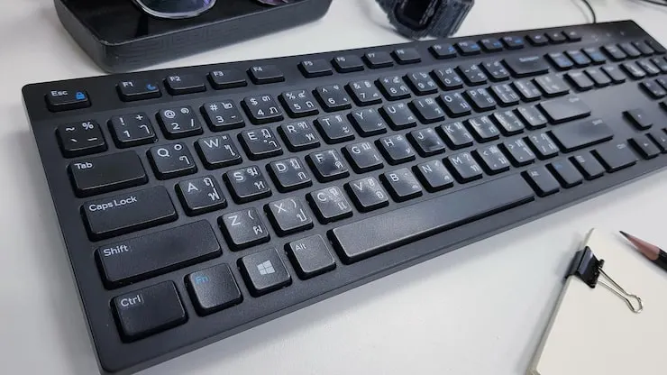

Teclado
Definición: Dispositivo para introducir texto y comandos.
Ejemplo: Teclado mecánico con switches.
Cuidados: limpieza periódica y evitar líquidos.

Explora por categoría y copia tus imágenes al lado.
Definición: Dispositivo para introducir texto y comandos.
Ejemplo: Teclado mecánico con switches.
Cuidados: limpieza periódica y evitar líquidos.
Definición: Dispositivo apuntador que controla el cursor.
Ejemplo: Mouse óptico 1600 DPI.
Cuidados: usar en superficies planas y limpiar el sensor.
Definición: Captura el sonido para digitalizarlo.
Ejemplo: Micrófono USB cardioide.
Cuidados: evitar golpes y proteger del polvo.
Definición: Digitaliza documentos e imágenes.
Ejemplo: Escáner plano A4.
Cuidados: mantener limpio el cristal y taparlo después de usar.
Definición: Captura video e imágenes en tiempo real.
Ejemplo: Webcam 1080p con micrófono integrado.
Cuidados: evitar luz directa y mantener limpia la lente.

Definición: Dispositivo de control para videojuegos.
Ejemplo: Joystick USB con vibración.
Cuidados: no forzar los controles y guardar en lugar seguro.
Definición: Permite interactuar directamente con los dedos.
Ejemplo: Panel multitouch de 10 puntos.
Cuidados: usar protectores y limpiar con paño suave.

Definición: Dispositivo de visualización.
Ejemplo: Monitor IPS 24'' 1080p.
Cuidados: limpieza con paño seco, protección contra sobrevoltaje.
Definición: Dispositivo de salida de audio.
Ejemplo: Sistema estéreo 2.1.
Cuidados: evitar volumen excesivo y polvo.
Definición: Emiten sonido de forma personal.
Ejemplo: Auriculares Bluetooth con micrófono.
Cuidados: no enrollar excesivamente el cable y limpiar almohadillas.
Definición: Proyecta imágenes y videos en superficies.
Ejemplo: Proyector LED 3000 lúmenes.
Cuidados: evitar polvo en la lente y usar en ambientes controlados.
Definición: Genera copias físicas de documentos digitales.
Ejemplo: Impresora láser monocromática.
Cuidados: usar cartuchos originales y evitar polvo interno.
Definición: Dispositivo para impresión de planos y gráficos grandes.
Ejemplo: Plotter de corte y pluma.
Cuidados: mantener cabezales limpios y usar papel adecuado.
Definición: Emisión de señales visuales o iluminación.
Ejemplo: Luces RGB de notificación.
Cuidados: no sobrecargar y usar controladores adecuados.

Definición: Disco magnético mecánico.
Ejemplo: 1TB 7200RPM.
Cuidados: evitar golpes, desfragmentar ocasionalmente si es necesario.
Definición: Unidad basada en memoria flash, más rápida.
Ejemplo: NVMe M.2 500GB.
Cuidados: mantener respaldos, actualizar firmware.